Halo VJ
Mac 用の VJ ソフト VJ software for Mac
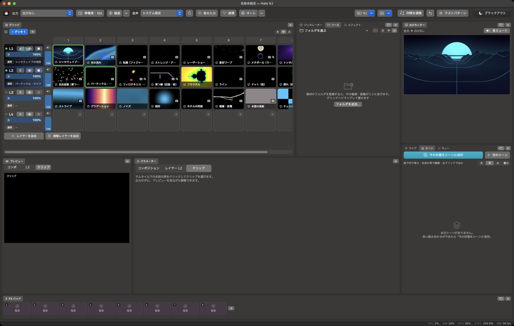
機能Features
- クリップの再生
- レイヤーとクリップのグリッド。クリック、キーボード、MIDI で再生。重ね方、不透明度、切り替えのフェード。
- 素材
- HAP（Hap / Alpha / Q / Q Alpha / R）、ProRes などの動画。PNG・JPEG・PSD・PDF・SVG などの静止画。GIF・WebP のアニメーション。
- ジェネレーター
- 約 30 種類。テキスト、時計、カメラ入力を含む。
- エフェクト
- 約 30 種類。マスク、調整レイヤー、FX パッド。
- 音・BPM
- 値を音の大きさや BPM に合わせて動かす。BPM の自動検出。
- 映像の入出力
- Syphon、NDI®（どちらも入力と出力）。
- 制御
- OSC、MIDI。Art-Net / DMX で照明へ出力。
- 出力
- 複数面のマッピング、四隅の補正、テストパターン、録画。
- そのほか
- シーン、キュー、自動操縦。素材をまとめて保存。自動アップデート。
- Clip playback
- A grid of layers and clips. Trigger by click, keyboard or MIDI. Blend modes, opacity, fade transitions.
- Media
- HAP (Hap / Alpha / Q / Q Alpha / R), ProRes and other video. Stills such as PNG, JPEG, PSD, PDF and SVG. Animated GIF and WebP.
- Generators
- About 30, including text, clock and camera input.
- Effects
- About 30. Masks, adjustment layers, FX pads.
- Audio / BPM
- Drive parameters from audio level or BPM. Automatic BPM detection.
- Video I/O
- Syphon and NDI®, both input and output.
- Control
- OSC and MIDI. Art-Net / DMX output to lighting.
- Output
- Multi-surface mapping, corner pinning, test patterns, recording.
- Other
- Scenes, cues, autopilot. Collect media into one folder. Automatic updates.
ジェネレーターの例Some of the generators
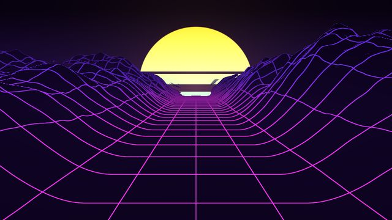
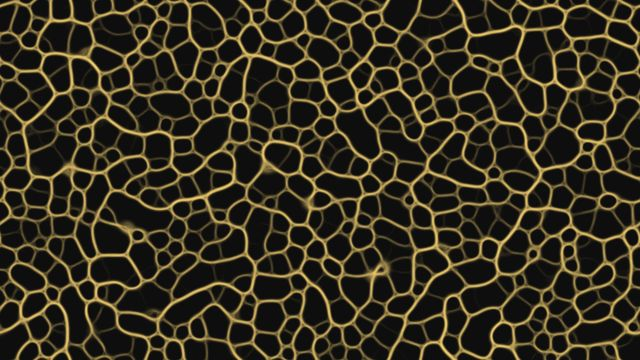
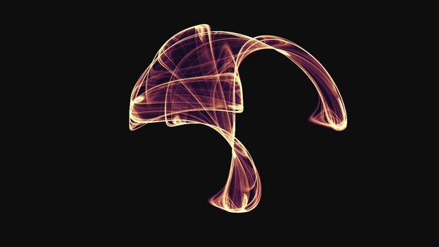
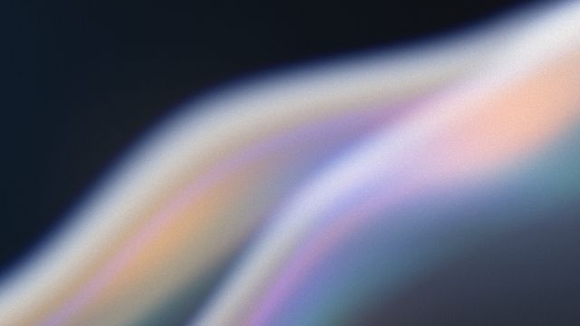
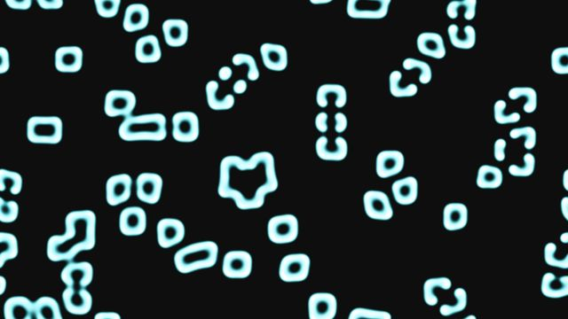
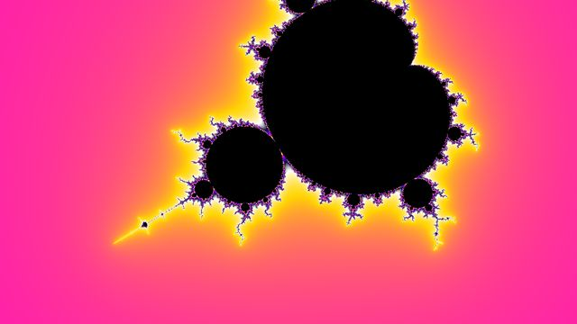
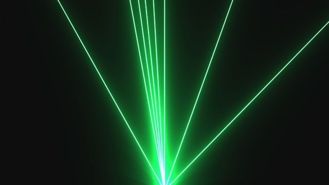
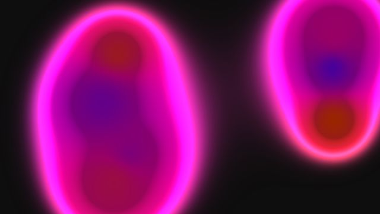
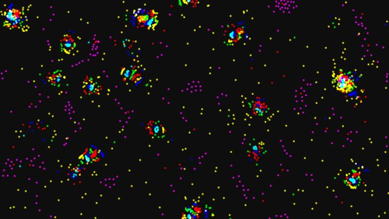
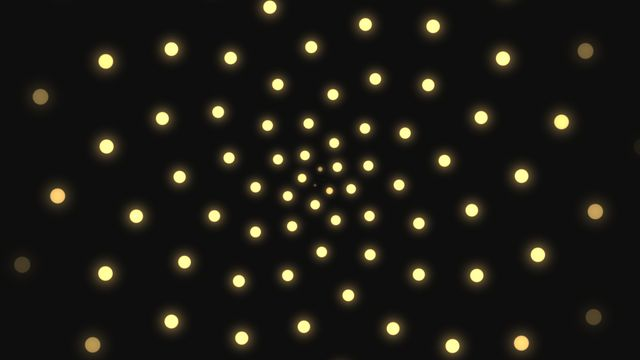
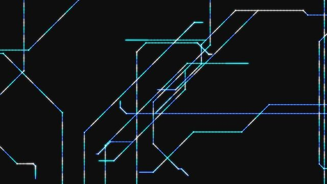
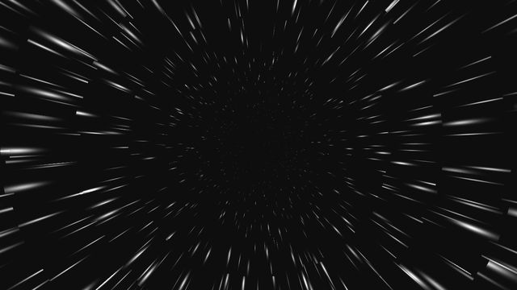
インストールInstallation
- zip をダウンロードして開く。
- 「Halo VJ」を「アプリケーション」フォルダに入れる。
- 初めて開くときに止められたら、システム設定 →「プライバシーとセキュリティ」→「このまま開く」。
- Download the zip and open it.
- Move “Halo VJ” to the Applications folder.
- If macOS blocks the first launch: System Settings → Privacy & Security → “Open Anyway”.
補足Notes
- 開発中のソフトです（1.0 より前）。
- 画面の表示は日本語と英語（Mac の言語の設定で切り替わる）。
- NDI を使うには、NDI のランタイムが入っている必要があります。
- 不具合や要望は GitHub の Issues へ。変更の履歴は Releases。
- Work in progress (pre-1.0).
- The interface is in Japanese and English (follows your Mac's language setting).
- NDI requires the NDI runtime to be installed.
- Bug reports and requests: GitHub Issues. Changelog: Releases.